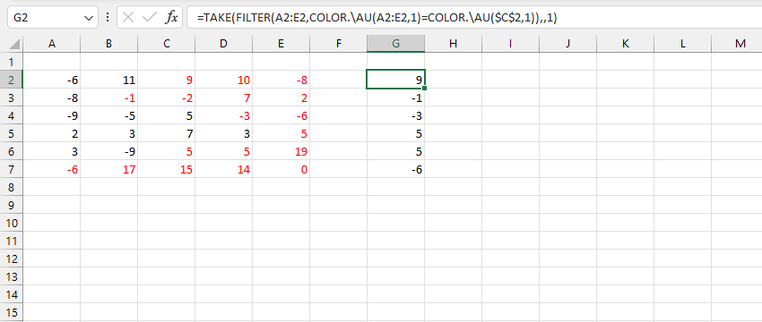

VD1: Tính tổng các giá trị ứng với các ô màu đỏ (kết quả là tổng của {1,4,7}).

=SUMPRODUCT(C3:C11*(COLOR.\AU(B3:B11)=COLOR.\AU(B3)))
VD2: Tìm các ô đầu tiên được tô đỏ trên mỗi hàng (VD: hàng A2:E2 chứa ô C2 được tô đỏ đầu tiên).
=TAKE(FILTER(A2:E2,COLOR.\AU(A2:E2,1)=COLOR.\AU($C$2,1)),,1)
Related function
ISVISIBLE Kiểm tra trạng thái hiện tại của ô chỉ định (Hiển thị hay ẩn?).
COUNTIF Đếm số lượng trong một phạm vi đáp ứng điều kiện xác định.
Return to Home